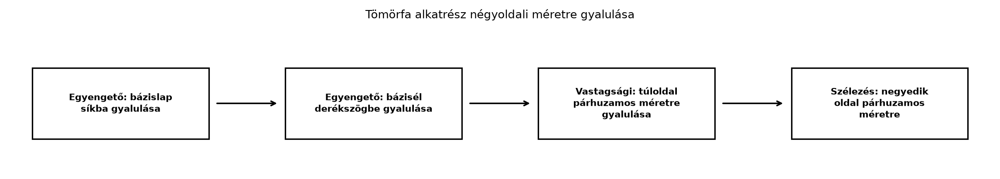
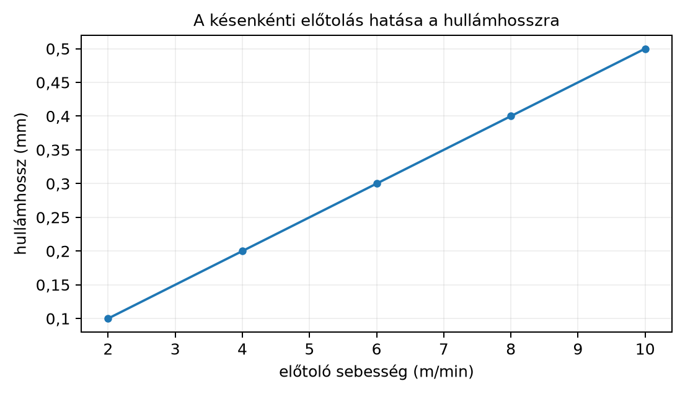

23.2 Vastagsági gyalugép és a
teljes keresztmetszeti megmunkálás
23.2.1 Miért kell ezt
megtanulnod?
Az egyengető gyalugépen már elkészítetted a deszka
bázislapját (az első sík lapot) és
bázisélét (az első derékszögbe gyalult élt). A másik
lap azonban még fűrészelt, egyenetlen, és a vastagság sem pontos. A
vastagsági gyalugép ezt a második, a bázislappal
párhuzamos lapot munkálja méretre. Nélküle a tömörfa alkatrész
vastagsága esetleges lenne, és a ragasztott lap, keret vagy fiókoldal
összeállításkor nem illeszkedne pontosan. A vastagsági gép tehát nem
díszlet, hanem a pontos méret záloga.
23.2.2 Szemléletes kép
Képzeld el, hogy egy tölgyfa asztalláb nyers darabja
.
Az egyengetőn síkba gyalultad az egyik lapot és az egyik élt, méghozzá
úgy, hogy azok pontosan derékszöget zárnak be egymással. Most a
vastagsági gyalugéphez viszed a darabot: a bázislap lefelé fekszik az
asztalon, a gép felülről forgácsolja a túloldalt. A cél
.
A vastagsági gép a túloldalt
-re,
a bázislappal párhuzamosra munkálja. A negyedik oldalt ezután
szélezéssel veszed méretre. Így lesz az alkatrész négy oldalról
méretre gyalult darab.
23.2.3 Definíciók és
alapfogalmak
Definíció. A vastagsági gyalugép
olyan faipari gép, amely a munkadarab egyik, már síkra gyalult
bázislapját leszorítva a túloldali lapot a bázislappal párhuzamosra,
előírt vastagságra munkálja. A gépi előtolás az asztal fölött
elhelyezkedő késtengely alatt húzza át a darabot.
Definíció. A fogásmélység az egy
menetben levett anyagvastagság. Értéke anyagtól, szélességtől és
gépbeállítástól függ; tömörfánál jellemzően
–
menetenként (tájékoztató, ellenőrizendő: gépkönyv). Keményfánál kisebb,
puhafánál nagyobb fogást választunk.
Definíció. A késenkénti előtolás a
munkadarab elmozdulása két egymást követő kés vágása között (mm). Jele
.
A felület hullámossága ebből számítható.
Definíció. A végi lépcső
(beharapás; angol gépkönyvekben: snipe) a vastagsági gyalugép
tipikus hibája: a munkadarab elején vagy végén rövid szakaszon mélyebb
forgácsolás keletkezik, ezért a végeken lépcső marad.
Definíció. A teljes keresztmetszeti
megmunkálás a tömörfa alkatrész négy hosszoldalának sorrendben
történő, derékszögű és párhuzamos méretre munkálása: bázislap, bázisél,
túloldal, negyedik oldal.
23.2.4 A vastagsági gyalugép
felépítése
A vastagsági gyalugép fő részei:
Alsó asztal: erre fekteted a bázislappal lefelé a
darabot. Magassága a fogásmélységet szabja meg.
Késtengely: a gép felső részén, vízszintesen forog.
Átmérője és fordulatszáma a gépkönyv szerint rögzített; a kések
cserélhetők.
Előtoló hengerek: a bemeneti oldalon gyakran
bordázott henger húzza be a darabot, a kimeneti oldalon sima henger
vezeti ki. A hajtás külön motorról, sebességváltóval vagy elektronikusan
szabályozott.
Visszacsapódás elleni biztosítás: rugós karmok vagy
görgők, amelyek a darabot csak előre engedik, hátrafelé nem.
Nyomólábak, nyomólécek: a késtengely előtt és után
a darabot az asztalra szorítják, csökkentik a rezgést és a végi lépcső
kockázatát.
Védőburkolat: a késtengelyt fölülről és oldalról
takarja.
Elszívó csonk: az elszívórendszerhez
csatlakozik.
Statikus változat (mint a PDF-ben)
A vastagsági gyalugép oldalmetszete a munkadarabbal; a végi
lépcső kialakulása
A metszet balról jobbra a darab útját mutatja: a visszacsapódásgátló
karmok és a bordázott behúzóhenger fogja meg, a forgácstörő (első
nyomóléc) leszorítja, a felül forgó késtengely a felső oldalt gyalulja,
a hátsó nyomóléc és a sima kihúzóhenger vezeti ki. A darab bázislappal
lefelé az asztalon fekszik, az asztal magasságát orsó állítja; a gépet
felülről sraffozott burkolat takarja, rajta az elszívócsonk. A jobb alsó
kis rajz a végi lépcsőt mutatja: ha a darab túl rövid, a vége csak egy
hengernél van, megbillen, és a kés mélyebben fog. Az interaktív változat
lépésenként végigvezeti a deszkát, rövid darabbal is. A tájékoztató
méretek: asztalszélesség kb. 400–630 mm, késtengely-átmérő kb. 90–125
mm.
23.2.5 Gépbiztonság
Gépbiztonság. A vastagsági gyalugépet csak
betanított, felügyelt tanuló kezelhet; védőberendezés nélkül, egyedül,
fáradtan ne végezd ezt a műveletet.
Mindig használd a gép védőburkolatát, visszacsapódásgátlóit és
elszívását.
Viselj védőszemüveget, hallásvédőt és a fapor ellen legalább FFP2
légzésvédő félálarcot (a keményfa-por rákkeltő, jelölve: határérték és
besorolás ellenőrizendő).
A forgó késtengely közelében tilos kesztyűt
viselni: a kesztyűt a gép behúzhatja.
A munkadarabot tilos a késtengely alatt kézzel tolni vagy húzni; a
gépi előtolás végzi.
Túl rövid darabot tilos vastagolni. A legkisebb hossz a gépkönyvben
szerepel, jellemzően
–
körüli érték (ellenőrizendő: a konkrét gépkönyv).
Késcsere, tisztítás, beállítás előtt állítsd le a gépet, várd meg a
szerszám teljes leállását, és áramtalaníts.
A munkaterület legyen szabad, a vészleállító elérhető.
23.2.6 Az egyengetés–vastagolás
sorrendje
A teljes keresztmetszeti megmunkálás sorrendje nem felcserélhető. A
vastagsági gép a bázislaphoz képest párhuzamosít; ha a bázislap nem sík,
a hiba átmásolódik a túloldalra.
A helyes sorrend:
Egyengető gyalugép – bázislap. Az egyengetőn síkba
gyalulod a széles lapot. Ez a lap lesz a vastagsági gép vonatkoztatási
felülete.
Egyengető gyalugép – bázisél. Az élgyalulásnál a
bázislaphoz szorítva derékszögbe és síkba gyalulod az egyik élt.
Vastagsági gyalugép – túloldal. A bázislapot lefelé
fektetve a gép a túloldalt párhuzamosra és a kívánt vastagságra
munkálja.
Szélezés – negyedik oldal. A negyedik élt a
bázislaphoz és a bázisélhez képest párhuzamosra, a kívánt szélességre
munkálod. Széles lapnál a negyedik élt asztalos körfűrészgépen 1–2 mm
ráhagyással szélezzük, majd gyalulással munkáljuk méretre; vastag,
stabil keresztmetszetnél közvetlenül a vastagsági gépen, a bázisélt
lefelé fordítva (élére állítva csak a gépkönyv és a stabilitás szerint;
ellenőrizendő).
Ezt a sorrendet mutatja az alábbi folyamatábra:

Tömörfa alkatrész négyoldali méretre
gyalulása - A sorrend az egyengetővel készített két bázisfelületre épül.
A negyedik oldal szélezése gyakran asztalos körfűrészgépen vagy
szélegyengetéssel történik.
Statikus változat (mint a PDF-ben)
A teljes keresztmetszeti megmunkálás négy lépése bütüről
nézve, és a nem sík bázislap hibája
A keresztmetszeteken a vastag vonal a már gyalult oldal, a szám a
megmunkálás sorrendje, a szürke kör a késtengely helye: az egyengetőn
alul, a vastagsági gépen felül. A 60 × 60 mm-es lábnál a negyedik oldal
is a vastagsági gépen készül, a báziséllel lefelé; széles lapnál előbb
ráhagyással szélezünk. A szaggatott keretes kocka azt mutatja, miért nem
cserélhető fel a sorrend: a nem sík bázislap görbülete a túloldalra is
átmásolódik.
Szabály. A vastagsági gyalugép nem
egyenesítő gép: görbe, csavarodott vagy ék alakú lapból nem
készít sík lapot. A síkítás az egyengető gyalugép feladata.
23.2.7 A vastagsági gép beállítása
lépésenként
Eljárás. A vastagsági gyalugép beállítása
menetenként:
Kapcsold be az elszívást, és ellenőrizd a
visszacsapódásgátlókat.
Mérd meg a nyers darab vastagságát, és nézd meg a rajz előírt kész
vastagságát.
Határozd meg a menetenkénti fogásmélységet: kemény lombosfán
–,
puhafán legfeljebb
–
(tájékoztató, ellenőrizendő).
Állítsd az asztalt úgy, hogy az első menet ne vegye le túl nagy
részt; próbadarabon ellenőrizd.
Fektess be egy próbadarabot a bázislapjával lefelé, és engedd át a
gépen.
Mérd meg a kijövő darab vastagságát, párhuzamosságát és
felületét.
Ha kell, korrigáld az asztalmagasságot, és végezd el a következő
menetet.
Az utolsó menet előtt hagyj
–
ráhagyást, hogy az utolsó fogás vékony, sima felületet adjon.
23.2.8 Számítások a vastagsági
gyalugépnél
Számítás. Forgácsolási sebesség.
Egy vastagsági gyalugép késtengelyének átmérője
,
fordulatszáma
.
Mekkora a forgácsolási sebesség?
Képlet:
Behelyettesítve:
Ellenőrzés: a gyalugépek forgácsolási sebessége jellemzően
–
tartományban van (tájékoztató, ellenőrizendő), ezért az eredmény
nagyságrendje jó.
Számítás. Késenkénti előtolás és hullámhossz.
Ha az előtoló sebesség
,
a késszám
,
a fordulatszám
,
akkor a késenkénti előtolás – a felületi hullámok hossza:
Minél kisebb az
,
annál simább a felület. Ezért nagy fordulatszám, több kés vagy kisebb
előtoló sebesség javítja a minőséget, de lassabb haladást jelent.
Számítás. Menetszám meghatározása.
Egy
vastag nyers darabot
kész vastagságra akarunk gyalulni. A teljes levétel
.
Ha menetenként
fogást választunk, hány menet szükséges?
A három menet beosztása például:
.
Az utolsó vékony menet simább felületet ad.
A hullámhossz alakulását szemlélteti az alábbi, képletből számolt
diagram:

A késenkénti előtolás hatása a
hullámhosszra - Szemléltető számítás: n = 5000 1/min, z = 4 kés;
hullámhossz = v_e/(n·z), mm-ben. Az értékek tájékoztatók, a gépkönyv és
a szerszámgyártó adatai az irányadók.
Gépbiztonság. A művelet betanított, felügyelt
tanulónak szól; védőberendezés nélkül, egyedül, fáradtan ne végezd.
Védőszemüveg, hallásvédő, FFP2 légzésvédő, elszívás bekapcsolva.
Kesztyűt forgó szerszámnál tilos viselni.
Lépések:
Anyagvizsgálat. Nézd meg a darabot: nincs-e szeg,
laza göcs, repedés. Mérd meg a nyers méretet. – ellenőrzés:
.
Egyengető – bázislap. Gyaluld síkba az egyik széles
lapot. – ellenőrzés: acélvonalzóval nézve nincs fényrés; a lap teljesen
sík.
Egyengető – bázisél. Gyaluld síkba és derékszögbe
az egyik élt. – ellenőrzés: derékszöggel mérve nincs hézag; a bázisél
egyenes.
Vastagsági – túloldal. Fektesd a bázislapot lefelé,
és vastagold a túloldalt
kész vastagságra, több menetben. – ellenőrzés: tolómérővel vastagság
(tájékoztató).
Vastagsági – negyedik oldal. A darabot a
bázisélével lefelé fektesd, és vastagold
-re.
– ellenőrzés: szélesség
,
derékszög.
Hosszméret. Darabold a két véget
hosszra, derékszögben. – ellenőrzés: hossz
.
Dokumentálás. Vezesd fel a munkanaplóba a kész
méreteket és az eltéréseket.
23.2.10 Minőségellenőrzés
Vastagság és szélesség: tolómérővel a darab két
végén és közepén mérd meg; a megengedett eltérés tájékoztató jelleggel
(ellenőrizendő: a műhelyrajz tűrése).
Párhuzamosság: a két lap egymáshoz képest
párhuzamos; tolómérővel a vastagság a teljes hosszon egyenletes.
Derékszög: a lapok és az élek
-osak;
derékszöggel ellenőrzött hézag legfeljebb
(tájékoztató).
Egyenesség: acélvonalzóval a lapra fektetve nincs
fényrés.
Felületi hullámosság: rálátásos vizsgálattal vagy
tapintással nem lehet határozott hullámosság; a hullámhossz a fent
számított érték körül legyen.
Snipe: a végeken nem maradhat mélyebb lépcső; ha
van, a darabot újra kell gyalulni, vagy a hibás véget le kell
vágni.
Ha eltérés van, a gépbeállítást ellenőrizd, majd próbadarabon
kalibrálj, ne a kész alkatrészt javítsd próbálgatva.
23.2.11 Tipikus hibák és okaik
Végi lépcső a darab végén. Oka: a behúzó vagy
kifogó henger nem szorít eléggé, a darab rövid, vagy az utolsó fogás túl
mély. Helyes gyakorlat: hosszabb darabból indulj, a végeket később vágd
le; használj áldozati darabot a sor elején és végén; állítsd a
nyomóléceket a gépkönyv szerint.
Hullámos felület. Oka: túl nagy előtoló sebesség,
kevés kés, tompa kések. Helyes gyakorlat: csökkentsd az előtolást, élezd
vagy cseréld a késeket, válassz többkéses tengelyt.
Kitörések a lapon. Oka: ellenirányú rost, tompa
kés, túl nagy fogásmélység. Helyes gyakorlat: kisebb fogás, éles kések,
a darabot rostirányban vezesd (a rost lejtése a gépből kifelé haladjon,
ha lehetséges).
Ferde vastagság. Oka: a bázislap nem volt sík, vagy
a munkadarab az asztalon billeg. Helyes gyakorlat: az egyengetést
ellenőrizd, a darabot stabilan fektesd le, és az asztalt tartsd
tisztán.
Visszacsapódás veszélye. Oka: rövid darab, hibás
visszacsapódásgátló, túl nagy fogás. Helyes gyakorlat: a legkisebb
hosszt tartsd be, a visszacsapódásgátlót rendszeresen ellenőrizd.
23.2.12 Hibaelemzési eset: lépcső a
végeken
Hibaelemzés. A tanuló vastagolás után azt látja,
hogy a tölgyfa polclap mindkét végén
–-rel
vékonyabb, mint a közepén.
Tünet: a végeken világosabb, mélyebb sáv,
tapintással lépcső érezhető.
Lehetséges okok: a kifutó oldali nyomóhenger túl
magasan van; a darab túl rövid, ezért az utolsó
–-en
már nincs megfelelő leszorítás; az utolsó menet fogása túl mély.
Vizsgálat: mérd meg a vastagságot a darab mindkét
végén és a közepén. Nézd meg, hogy a hiba a gép kifutó oldalán
jelentkezik-e. Ellenőrizd a nyomólécek beállítását a gépkönyv
szerint.
Valódi ok: a munkadarab
hosszú volt, és a gépkönyv szerint a legkisebb vastagolható hossz
(ellenőrizendő: a konkrét gépkönyv).
Javítás: a hibás végeket le kell vágni, ha a kész
méret engedi; egyébként a darabot újra kell gyalulni hosszabb
anyagból.
Megelőzés: tartsd be a gépkönyv szerinti legkisebb
hosszt; hosszabb darabot gyalulj, és a kész méretre vágást a vastagolás
után végezd. Sorozatnál a végdarabok elé és mögé áldozati csíkot fűzz
be.
23.2.13 Valós életbeli
alkalmazás
Egy asztalos műhelyben konyhai munkalap alá tölgyfa merevítő léceket
gyártanak. A nyers anyag
-es
fűrészáru, a kész vastagság
.
A tanuló egyengetőn síkba gyalulta az egyik lapot, majd a bázisélt. A
vastagsági gépnél azonban egyetlen
-es
fogást állított be, és egyszerre akart
mm-ről
mm-re levinni. A gép hangosan dolgozott, a felület hullámos lett, és a a
gép lelassult, a felület kitöredezett. A szakoktató leállította, és
megmutatta, hogy tölgyön a menetenkénti fogás
–
(tájékoztató), ezért az
-t
három menetre kell osztani:
.
A próbadarabok után a tanuló már megfelelő felületet kapott, és a
munkanaplóba beírta a mért vastagságokat. A tanulság: a vastagsági gép
pontos, de csak türelemmel, helyes fogásmélységgel.
23.2.14 Önellenőrzés
Miért nem lehet a vastagsági gyalugéppel görbe deszkát síkra
gyalulni?
Milyen sorrendben készül a négy oldalról méretre gyalult alkatrész?
Nevezd meg a gépeket is.
Melyik védőeszközt tilos viselni forgó késtengely közelében, és
miért?
Mekkora a hullámhossz, ha az előtolás
,
a fordulatszám
,
a késszám
?
Mit jelent a végi lépcső (beharapás), és hogyan előzheted meg?
23.2.14.1 Megoldások –
Önellenőrzés
A vastagsági gép a bázislapot másolja: ha a bázislap görbe, a
túloldal is görbe lesz. A síkítás az egyengető gyalugép feladata.
Sorrend: egyengetőn bázislap, egyengetőn bázisél, vastagsági
gyalugépen túloldal, szélezéssel (pl. asztalos körfűrészgépen) a
negyedik oldal.
Kesztyűt, mert a gép behúzhatja, és a kezet a késtengelyhez
ránthatja.
.
A végi lépcső a munkadarab végein keletkező mélyebbre gyalult
lépcső. Megelőzés: hosszabb darab, áldozati csík, a nyomóhengerek helyes
beállítása, kisebb utolsó fogás.
23.2.15 Feladatok
1. feladat (A). Fogalmazd meg saját szavaiddal, mi a
különbség az egyengető és a vastagsági gyalugép között a síkítás és a
párhuzamosítás szempontjából.
2. feladat (A). Számítsd ki egy
átmérőjű,
fordulatú vastagsági késtengely forgácsolási sebességét
-ban.
3. feladat (B). Egy vastagsági gép előtoló sebessége
,
a késszám
,
a fordulatszám
.
Mekkora a késenkénti előtolás? Miért jobb a felület, ha
késes tengelyt használsz ugyanezzel az előtolással?
4. feladat (B). Egy nyers darab vastagsága
,
a kész méret
.
Menetenként legfeljebb
fogást engedélyez a gépkönyv. Hány menetben munkálod meg a túloldalt?
Írd le a menetek fogásbeosztását.
5. feladat (C). Egy tanuló az egyengetőn csak az élt
gyalulta meg, a lapot nem, majd a vastagsági gépen akarta a másik lapot
párhuzamosra venni. Miért hibás ez a sorrend? Mi a helyes eljárás?
6. feladat (D). Készíts technológiai lépéssort egy
-es
fenyő polclap méretre gyalulásához
nyers darabból. Nevezd meg az egyes lépésekhez tartozó gépeket és
ellenőrzési pontokat.
23.2.16 Megoldások
1. feladat (A). Az egyengető gépen a munkadarab
egyik lapját vagy élét síkba és derékszögbe munkáljuk; ez
síkít és derékszöget ad. A vastagsági
gép a már sík bázislaphoz képest párhuzamos túloldalt
készít, és a vastagságot méretre állítja; görbét nem
egyenesít.
2. feladat (A).
3. feladat (B).
Négykéses tengelynél ugyanezzel az előtolással
,
tehát a hullámhossz feleződik, a felület simább lesz.
4. feladat (B). Teljes levétel:
.
Menetek:
,
tehát 3 menet. Az utolsó menetet érdemes
–-re
csökkenteni: például
= 4 menet.
5. feladat (C). A vastagsági gép a bázislappal
lefelé fekvő darabot munkálja. Ha csak az élt gyalulták meg, a széles
lap még fűrészelt, görbe. A vastagsági gép ezt a görbeséget átmásolja a
túloldalra, így a vastagság ugyan pontos lehet, de a lap nem lesz sík.
Helyes sorrend: egyengetőn először a széles lap (bázislap), majd az él
(bázisél), csak ezután vastagsági gép.
Véglevágás: a két véget derékszögben
hosszra vágni. – ellenőrzés: hossz
.
Dokumentálás: munkanaplóba a mért méretek és eltérések.
23.2.17 Rövid összefoglaló
A vastagsági gyalugép a tömörfa alkatrész bázislapjára támaszkodva a
túloldali lapot párhuzamosra és előírt vastagságra munkálja. Nem
egyenesítő gép: a síkítás az egyengető feladata. A teljes
keresztmetszeti megmunkálás sorrendje: bázislap, bázisél, túloldal
vastagolása, negyedik oldal szélezése. A fogásmélység keményfán kisebb,
puhafán nagyobb; a meneteket úgy oszd be, hogy az utolsó vékony fogás
sima felületet adjon. A felületi hullámosság a késenkénti előtolástól
függ:
,
mértékegysége mm. A snipe a végeken keletkező lépcső, amely rövid darab,
rossz hengerbeállítás vagy mély utolsó fogás miatt jön létre. A
vastagsági gépet csak betanított, felügyelt tanuló kezelheti,
védőburkolattal, elszívással, védőszemüveggel, hallásvédővel és FFP2
légzésvédővel; kesztyű forgó szerszámnál tilos. Továbbvitt
eredmény. A négyoldali méretre gyalulás minden tömörfa
alkatrész gyártásának alapművelete; a későbbi keret-, káva- és
bútoralkatrész-gyártás során ezt a sorrendet használjuk, a
méretellenőrzést és a munkanaplós dokumentálást pedig a vizsgaremek és a
műhelygyakorlat során is megköveteljük.
23.2.18 Források és ellenőrzési
hiányok
Faipari gépek biztonsági követelményei: MSZ EN ISO 19085 sorozat
(jelölve: a megfelelő rész pontos száma ellenőrizendő).
Keményfa-por expozíciós határértéke és besorolása: ellenőrizendő a
hatályos magyar rendeletben.
Gépkönyv szerinti legkisebb vastagolható hossz, fordulatszám,
előtoló sebesség és fogásmélység: ellenőrizendő a konkrét gépen.
A megadott forgácsolási sebességek, fogásmélységek, tűrések és a
–
legkisebb hossz tájékoztató értékek; a gépkönyv és a műhelyrajz az
irányadó.